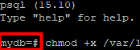

为PVC创建快照执行的前置/后置命令有多条时，可将多条预执行命令写入同一个脚本中，并将脚本放置于容器的持久化目录中，通过运行脚本执行多条命令，以简化输入的命令。
以下分别为前置和后置命令的脚本内容示例：
#前置命令脚本
#!/bin/bash
#注意：命令“SELECT pg_sleep(time);”中的睡眠时间参数需大于整个容器备份时长。
echo "begin;DO \$\$ DECLARE row record; BEGIN FOR row IN SELECT tablename FROM pg_tables WHERE schemaname = 'public' LOOP EXECUTE 'LOCK TABLE ' || quote_ident(row.tablename) || ' IN EXCLUSIVE MODE'; END LOOP; END \$\$; SELECT pg_sleep(3000); commit;" > /tmp/op_lock_pgsql.sql;
file_path="/tmp/DataBackup.txt"
rm -rf "$file_path"
#用于切换至具有使用“PSQL”工具连接数据库权限的操作系统用户。
#注意：当root用户可直接使用“PSQL”工具连接数据库时，无需切换用户。
#su - postgres <<'END'
if psql -U myuser -d mydb -h 127.0.0.1 -p 5432 -c "checkpoint;" 2>/dev/null; then
output=$(psql -U myuser -d mydb -h 127.0.0.1 -p 5432 -c "SELECT datname FROM pg_database;")
OLD_IFS="$IFS"
IFS=$'\n'
index=0
while read -r line; do
if [ "${index}" != 0 ] && [ "${index}" != 1 ]; then
prefix="("
suffix="rows)"
if [[ $line != $prefix* ]] && [[ $line != *"$suffix" ]]; then
line=$(echo "$line" | sed 's/^ *//;s/ *$//')
eval "psql -U myuser -d $line -h 127.0.0.1 -p 5432 -f /tmp/op_lock_pgsql.sql >> /tmp/DataBackup.txt 2>&1 &"
fi
fi
(( index++ ))
done <<< "$output"
while true; do
# 获取文件中"DO"出现的次数
count_begin=$(grep -o "BEGIN" "$file_path" | wc -l)
count_do=$(grep -o "DO" "$file_path" | wc -l)
# 如果"DO"字段出现的次数达到“BEGIN”字段出现次数，则退出循环
if [ "$count_do" -ge "$count_begin" ]; then
#echo "DO 出现了BEGIN次，退出脚本。"
break
fi
sleep 10
done
IFS="$OLD_IFS"
#锁表成功。
echo "200"
sleep 3000
else
#数据库连接失败。
echo "0"
fi
#如果前面执行“su – postgres”命令切换了用户，那么当脚本执行结束后，就要执行“exit”命令退出这个用户，如果前面没有切换，此处也不需要执行“exit”命令退出。
#exit
#END
#后置命令脚本
#!/bin/bash
#用于切换至具有使用“PSQL”工具连接数据库权限的操作系统用户。
#注意：当root用户可直接使用“PSQL”工具连接数据库时，无需切换用户。
#su - postgres <<'END'
if psql -U myuser -d mydb -h 127.0.0.1 -p 5432 -c "SELECT 1;" 2>/dev/null; then
processes=$(psql -U myuser -d mydb -h 127.0.0.1 -p 5432 -t -c "SELECT pid, state FROM pg_stat_activity WHERE query LIKE '%pg_sleep%'")
if [ -z "$processes" ]; then
echo "没有找到包含 pg_sleep 的进程"
else
while read -r line; do
pid=$(echo $line | awk '{print $1}')
if [ -n "$pid" ]; then
echo "正在终止进程: $pid"
psql -U myuser -d mydb -h 127.0.0.1 -p 5432 -c "SELECT pg_terminate_backend($pid);"
fi
done <<< "$processes"
fi
#当用户需要提前结束前置脚本执行时，可以强制终止前置脚本中“sleep进程”，命令中“grep”的字符串需要根据实际环境中“ps -ef”的执行结果来设置，并且“awk”打印的字段也需要根据“ps -ef”的执行结果中进程PID所在列进行相应更改。
pid=$(ps -ef | grep "/bin/bash /var/lib/postgresql/backup/dataprotect_pgsql_consistency_pre_script.sh" | grep -v grep | awk '{print $1}')
[ ! $pid ] && echo "pid is null" && echo "0" && exit
subtree=$(pstree -p $pid) subtree=$(pstree -p $pid)
right_str=${subtree##*\(}
sleep_pid=${right_str%*)}
kill -9 $sleep_pid
kill -9 $pid
#解锁成功。
echo "200"
else
#数据库连接失败。
echo "0"
fi
#如果前面执行“su – postgres”命令切换了用户，那么当脚本执行结束后，就要执行“exit”命令退出这个用户，如果前面没有切换，此处也不需要执行“exit”命令退出。
#exit
#END
配置步骤
- 将脚本上传至容器的任意持久化目录中并在容器界面执行以下命令为脚本文件添加权限，前置脚本位置“/var/lib/postgresql/backup/dataprotect_pgsql_consistency_pre_script.sh”和后置脚本位置“/var/lib/postgresql/backup/dataprotect_pgsql_consistency_post_script.sh”为例说明，使用者请根据实际脚本位置进行内容修改。
chmod +x /var/lib/postgresql/backup/dataprotect_pgsql_consistency_pre_script.sh chmod +x /var/lib/postgresql/backup/dataprotect_pgsql_consistency_post_script.sh
- 执行以下命令登录PostgreSQL数据库。
psql -U myuser -d mydb -h 127.0.0.1 -p 5432
其中myuser是数据库用户名，mydb是数据库名，127.0.0.1是数据库实例IP地址，5432是数据库实例运行端口号，默认值为5432，请根据实际替换。

- 执行以下命令切换至PostgreSQL数据库安装用户，以postgres为例，再执行2中命令。
su - postgres
- 如果回显显示进入数据库成功，取消以下命令的注解，继续执行4。
#su - postgres <<'END'
- 如果回显显示进入数据库失败，请联系华为技术工程师。
- 如果回显显示进入数据库成功，取消以下命令的注解，继续执行4。
- 修改脚本中所有的相关内容，并保存。
- 以下命令中的参数根据实际情况替换。其中myuser是数据库用户名，mydb是数据库名，127.0.0.1是数据库实例IP地址，5432是数据库实例运行端口号，默认值为5432。
psql -U myuser -d mydb -h 127.0.0.1 -p 5432
- 命令中的postgres请按实际用户密码替换。
export PGPASSWORD='postgres'
- 后续操作将以前置脚本位置“/var/lib/postgresql/backup/dataprotect_pgsql_consistency_pre_script.sh”和后置脚本位置“/var/lib/postgresql/backup/dataprotect_pgsql_consistency_post_script.sh”为例说明，使用者请根据实际脚本位置进行内容修改。
- 以下命令中的参数根据实际情况替换。其中myuser是数据库用户名，mydb是数据库名，127.0.0.1是数据库实例IP地址，5432是数据库实例运行端口号，默认值为5432。
- 参见应用一致性备份的生产环境Pod配置（通用）添加Pod标签和注解，添加注解时输入的前置和后置命令值示例如下。
#前置命令 kubectl annotate pod -l label=value -n namespace pre.hook.dataprotect.backup.io/command='["/bin/sh", "-c","/var/lib/postgresql/backup/dataprotect_pgsql_consistency_pre_script.sh"]' #后置命令 kubectl annotate pod -l label=value -n namespace post.hook.dataprotect.backup.io/command='["/bin/sh", "-c","/var/lib/postgresql/backup/dataprotect_pgsql_consistency_post_script.sh"]'

为确保前置和后置命令能正常执行，命令中的脚本位置需要和脚本实际的上传位置保持一致。